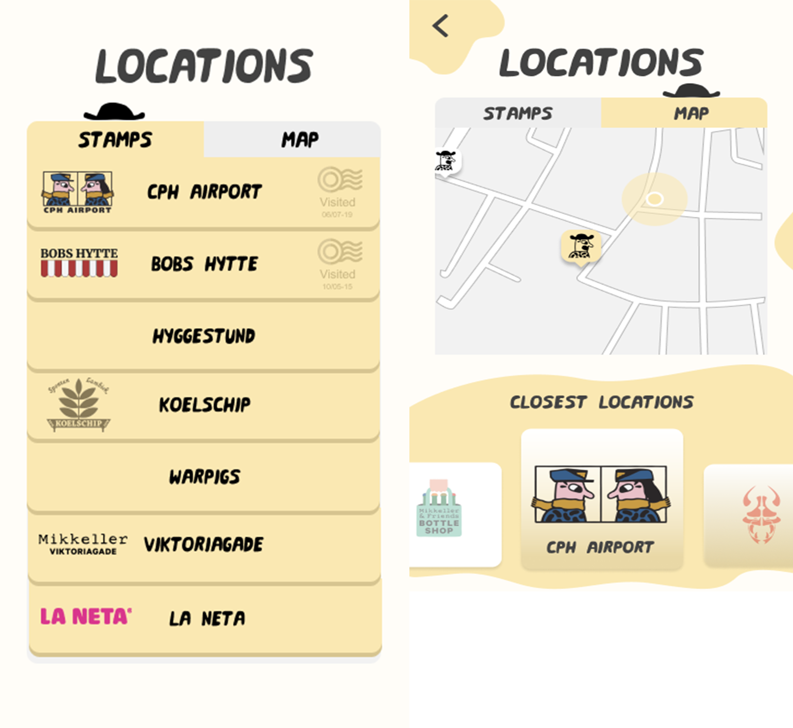
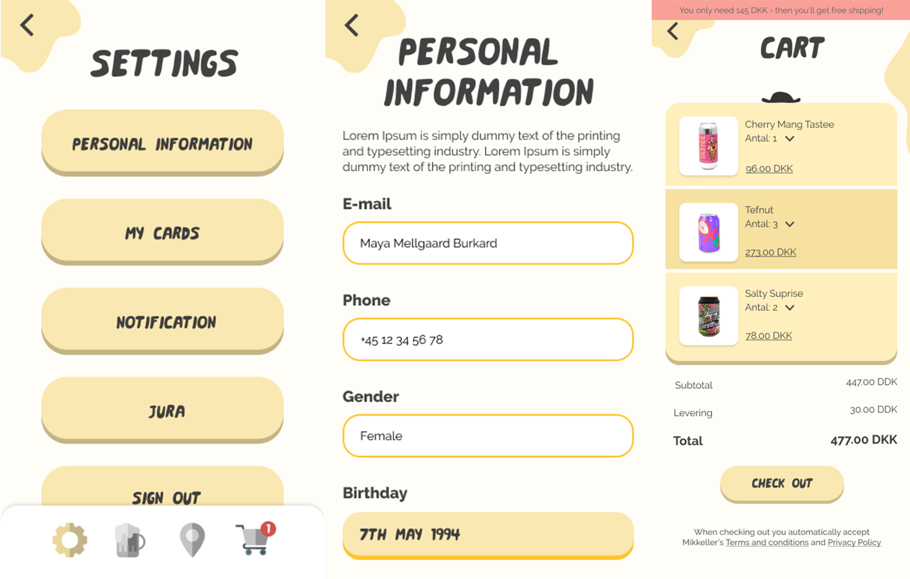
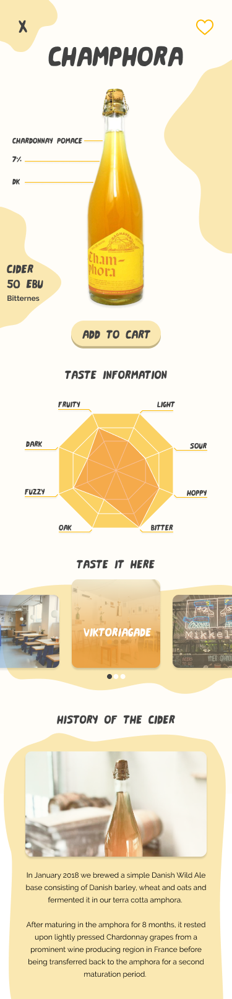

the Beer Cellar [2020]
This project was in collaboration with Maja, Anton Zeuthen, Monica Lund & Karina Kranker. It was part of a course in Design-driven Innovation. The goal was to democratise specialty beers and expand their demographic. In this process, we appled methods such as a design sprint, a design workshop, interviews, questionnaires and sitemapping. Prototyping was through wireframes, as represented in Figma.
Mikkeller er i dag, med deres to maskotter Henry og Sally, et internationalt brand, der rummer mere end bare øl. I samarbejde med Mikkeller, ville vi undersøge hvordan og hvorvidt vi kunne demokratisere deres specialøl, og åbne målgruppen til at omfatte en bredere demografi.
I udførelsen af vores feltarbejde, besøgte vi Mikkeller & Friends på Nørrebro og Mikkeller Viktoriagade på Vesterbro. Her observerede vi stemningen og kundernes interaktioner med bartenderne. Derudover, afviklede vi to semi-strukturerede interviews med barchefer på hhv. Mikkeller & Friends og Mikkeller Viktoriagde. Vi udførte også en brugerundersøgelse, hvor vi ønskede at få indblik i kundernes forhold til onlinekøb af øl. Vi spurgte derfor ind til respondenternes online købsvaner og deres begrundelser for valg eller fravalg af online køb.
Vi endte ud med konceptet Beer Cellar - en app der har til formål at skabe forbindelse mellem Mikkellers fysiske og online salgskanaler. Den har fokus på at gøre målgruppen klogere på øl og imødekomme deres behov for uddybende information og vejledning. Konceptet skal gøre det nemmere for målgruppen at gennemskue og forstå ‘ølmiljøet’, således at barriererne for online ølhandel mindskes mest muligt.Håbet for vores innovation Beer Cellar, er kort fortalt, at det kan være med til at udvide målgruppen for Mikkellers webshop, ved at fungere som en bro mellem Mikkellers barer og deres webshop og dermed løse den innovationsudfordring de står over for.

Igennem vores proces, søgte vi at udvikle et innovativt koncept til at hjælpe Mikkeller med at tiltrække nye kunder til deres webshop og komme et skridt nærmere en demokratisering af specialøl i Danmark. Vi indsamlede data om brugernes behov og ønsker, og brugte denne data til at definere vores mål for designprocessen og konceptudvikling. Den følgende løsning er derfor i høj grad designet med brugeren i centrum.

